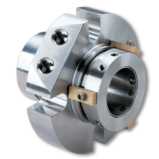

Los sellos mecánicos tipo cartucho de Chesterton son la opción preferida cuando se requiere confiabilidad. Estos
productos han demostrado ser resistentes y de alto rendimiento en una amplia gama de aplicaciones de sellado en
diversas industrias. Los sellos tipo cartucho son ideales para la estandarización en toda la planta y ahorran
tiempo con su fácil instalación. Las opciones de sellos tipo cartucho de Chesterton incluyen características
exclusivas y patentadas, como anillos de bloqueo autoalineables y lengüetas de prensaestopas ajustables.
Sellos Chesterton:
Chesterton 180 Sello de Cartucho Simple para Trabajo Pesado
Mayor confiabilidad en sellado para una amplia gama de aplicaciones
Máximo rendimiento para aplicaciones exigentes de alto torque
Sellado confiable de lodos
Capacidades de enjuague y drenaje
Certificado según NSF / ANSI 61
Chesterton 155 Sello de Cartucho Simple Estándar
Un sello mecánico simple y flexible para uso general en la planta
Sello de cartucho simple y rentable para uso general
Caras que generan bajo calor
Pestañas ajustables para fácil instalación
Certificado según NSF / ANSI 61
Chesterton 1510
Sello de Cartucho Simple de Alta Presión
El sello de cartucho simple de alta presión más confiable.
El diseño de cartucho confiable aumenta la vida útil del sello.
El diseño de cartucho confiable aumenta la vida útil del sello.
Chesterton 1810
Sello de Cartucho Simple de Alta Presión
El sello de cartucho simple de alta presión más confiable.
El diseño de cartucho confiable aumenta la vida útil del sello.
El diseño de cartucho confiable aumenta la vida útil del sello.
Chesterton 2510
Sello de Cartucho Simple de Alta Presión
El sello de cartucho simple de alta presión más confiable.
El diseño de cartucho confiable aumenta la vida útil del sello.
El diseño de cartucho confiable aumenta la vida útil del sello.
Chesterton 2810
Sello de Cartucho Simple de Alta Presión
El sello de cartucho simple de alta presión más confiable.
El diseño de cartucho confiable aumenta la vida útil del sello.
El diseño de cartucho confiable aumenta la vida útil del sello.
Chesterton 150 Sello Simple para Uso General
Opción Económica para Aplicaciones de Propósito General
Mejora simple para reducir los costos de mantenimiento de la planta.
Diseño de cartucho confiable que aumenta la vida útil del sello.
Certificado según NSF / ANSI 61

Chesterton 280 Sello Dual de Cartucho Pesado
Capacidades de Alta Resistencia para Aplicaciones Difíciles
Sello de cartucho dual para aplicaciones de alta resistencia.
Ideal para aplicaciones con alta viscosidad y alto contenido de sólidos.
Anillos de transmisión de alta resistencia con amortiguación para una máxima fiabilidad en aplicaciones de
alto par de torsión.
Chesterton 255 Sello Dual de Cartucho Estándar
Diseño Dual Flexible para Uso en Toda la Planta
Diseño dual flexible y rentable.
Controles ambientales avanzados a un precio accesible.
Tolerante a las fluctuaciones de presión del sistema.
Chesterton 250 Sello Dual de Cartucho de Propósito General
Alta Fiabilidad para Aplicaciones Generales
Asequible: perfecto para una actualización desde empaquetado.
Diseñado para aplicaciones generales.
Diseño comprobado para reducir los costos de mantenimiento y mejorar la fiabilidad.